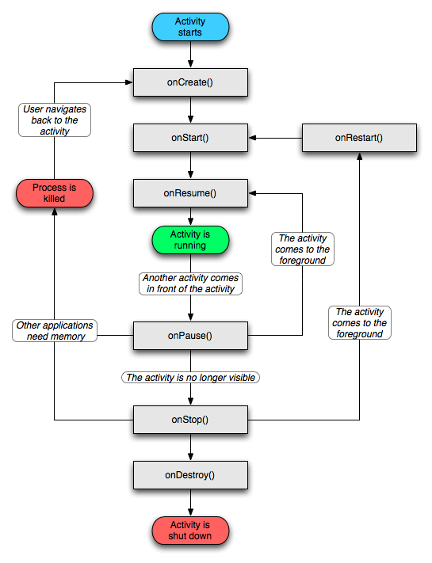

Android-Activity
①Activity页面跳转
使用场景：多用于内部跳转
显式跳转
一、支持：内部跳转1
2
3
4
5
6
7
8// 显式跳转，传入Context，传入字节码文件
Intent intent = new Intent(this,HomeActivity.class);
// 可以通过setClass设置跳转位置
intent.setClass(getActivity(),HomeActivity.class);
// 跳转时传递参数
intent.putExtra("key","value");
// 跳转
startActivity(intent);
二、支持：内部跳转+外部跳转1
2
3
4
5
6
7// 传入Context，传入字节码文件
Intent intent = new Intent();
// 动态设置跳转的位置，参数一:包名，参数2:完整类名
intent.setClassName("tk.wechat","tk.wechat.HomeActivity");
// 注意：setClassName内部也是调用的setComponent，下面包名和类名会跳转至模拟器系统闹钟
// intent.setComponent(new ComponentName("com.android.deskclock","com.android.deskclock.DeskClock"));
startActivity(intent);
隐式跳转
支持：内部跳转+外部跳转，使用场景：多用于外部跳转
被跳转的页面需要在AndroidManifest.xml清单文件中为activity配置过滤信息1
2
3
4
5
6
7
8
9
10
11
12 <activity android:name=".HomeActivity">
<intent-filter>
<!-- action必须有，且只能有一个，一般情况下自定义action值-->
<!-- 当两个软件的action值冲突时，由用户选择跳转一个-->
<action android:name="tk.wechat.homeActivity"/>
<!-- category类别，是一种额外描述，可以作为过滤条件设置多个，使隐式跳转时更准确定位action-->
<!-- 要实现隐式跳转，category中至少有一个值为android.intent.category.DEFAULT，否则匹配不到-->
<!-- category值不可自定义，由系统提供多个可选值-->
<category android:name="android.intent.category.DEFAULT"/>
<category android:name="android.intent.category.ALTERNATIVE"/>
</intent-filter>
</activity>
跳转时调用1
2
3
4
5
6
7
8
9 Intent intent = new Intent();
// 设置action动作，action的值应该要与我们的目标action对应
intent.setAction("tk.wechat.homeActivity");
// category类别，作为过滤条件更准确的定位action
// java代码中可以不写，默认添加Intent.CATEGORY_DEFAULT
intent.addCategory(Intent.CATEGORY_ALTERNATIVE);
// 跳转时传递参数
intent.putExtra("key","value");
startActivity(intent);
目标页面需要有数据处理能力，是可选的附加条件
可选类型
- android:mimeType
- android:mimeGroup
- android:scheme
- android:ssp
- android:sspPrefix
- android:sspPattern
- android:host
- android:port
- android:path
- android:pathPrefix
- android:pathPattern
跳转传递值
通过putExtra传递
设置传递参数1
2
3
4
5
6 Intent intent = new Intent();
// 跳转到MainActivity2
intent.setClass(MainActivity.this,MainActivity2.class);
// 设置传递参数
intent.putExtra("msg1","消息1");
startActivity(intent);
在目标页接收1
2
3
4
5// 得到传递的intent
Intent intent = this.getIntent();
// 得到传递的参数
String str = intent.getExtras().getString("msg1");
Toast.makeText(this,str,Toast.LENGTH_SHORT).show();
使用Bundle传递
创建Bundle对象，并设置Bundle传递的值，然后把Bundle传递过去1
2
3
4
5
6
7
8
9
10 Intent intent = new Intent();
// 设置目标Activity
intent.setClass(MainActivity.this,MainActivity2.class);
// 创建Bundle对象
Bundle bundle = new Bundle();
// key和value
bundle.putString("msg1","Bundle传递的消息");
// 再通过putExtras把Bundle对象传递过去
intent.putExtras(bundle);
startActivity(intent);
接收Bundle中传递的值1
2
3
4
5// 得到传递的intent
Intent intent = this.getIntent();
// 取Bundle中的String值
String str = intent.getExtras().getString("msg1");
Toast.makeText(this,str,Toast.LENGTH_SHORT).show();
②Activity生命周期
- 启动Activity：系统会先调用onCreate方法，然后调用onStart方法，最后调用onResume，Activity进入运行状态。
- 当前Activity被其他Activity覆盖其上或被锁屏：系统会调用onPause方法，暂停当前Activity的执行。
- 当前Activity由被覆盖状态回到前台或解锁屏：系统会调用onResume方法，再次进入运行状态。
- 当前Activity转到新的Activity界面或按Home键回到主屏，自身退居后台：系统会先调用onPause方法，然后调用onStop方法，进入停滞状态。
- 用户后退回到此Activity：系统会先调用onRestart方法，然后调用onStart方法，最后调用onResume方法，再次进入运行状态。
- 当前Activity处于被覆盖状态或者后台不可见状态，即第2步和第4步，系统内存不足，杀死当前Activity，而后用户退回当前Activity：再次调用onCreate方法、onStart方法、onResume方法，进入运行状态。
- 用户退出当前Activity：系统先调用onPause方法，然后调用onStop方法，最后调用onDestory方法，结束当前Activity。

拓展：getContext 和 getActivity的区别
- MainActivity.this: 表示MainActivity对象，一般用在内部类中指示外面的this，如果在内部类直接用this，指示的是内部类本身。因为MainActivity继承Activity，而Activity继承Context，所以它也可以用来提供Activity的Contex；
- this: 表示当前对象，一般而言，在哪个类中调用，就是指向该对象。
- getContext(): 获取当前Context的实例，如果使用场景是Activity则相当于 this, 如果使用场景是一个Server 那么获取的实例就是一个ApplicationContext()
- getActivity(): Fragment上的方法，相当于this或Activity.this，是获取当前Activity的实例，生命周期随当前的Activity销毁而销毁